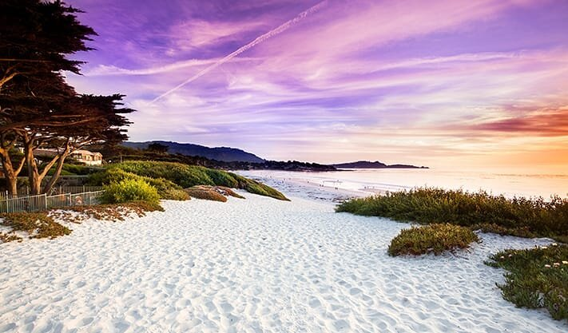
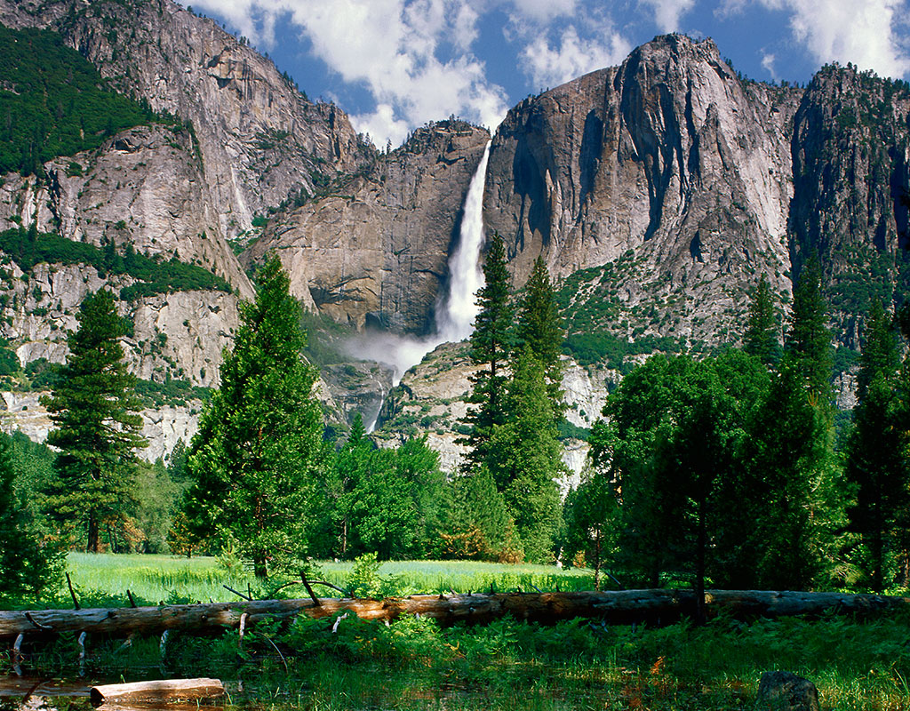
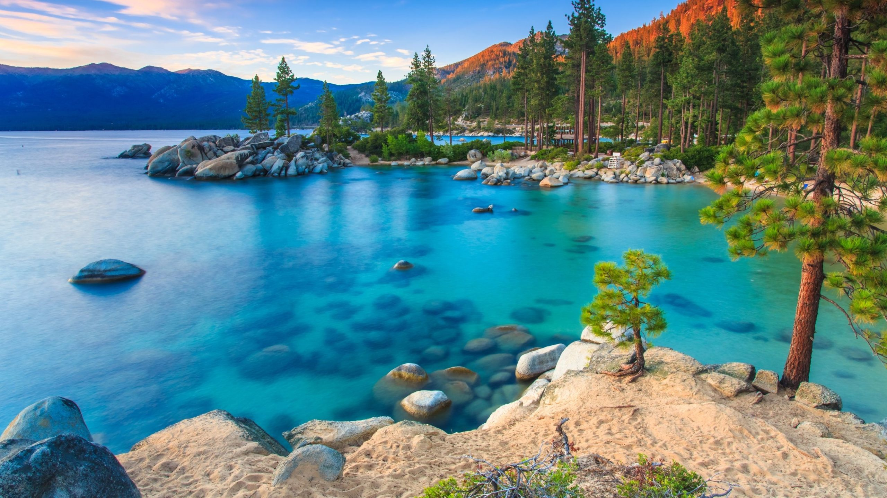

BigSur

Our First day was in BigSur,Big Sur is a rugged and mountainous section of the Central Coast of the U.S. state of California, between Carmel Highlands and San Simeon, where the Santa Lucia Mountains rise abruptly from the Pacific Ocean. It is frequently praised for its dramatic scenery. Big Sur has been called the longest and most scenic stretch of undeveloped coastline in the contiguous United States",and we spent nice time there and we enjoyed food in there.
Caramel Beach
Caramel Beach was the hidden beauty we found at that drive while going to BigSur that was a private beach, it is the most beautiful scenic beauty, we took lots of pictures over there and pacific ocean was too cold and that beach was on the way to bigSur, on the way we saw many Mountains and mountains were covered with fog and its was most beautiful sight and that place was extreme cold.
Yosemati National park
This National park is huge and i really didnt like the drive to this place the entire drive was ups and downs it was a hilly place, we went so early to that place ,since we dont have reservation we had to wait till 4 pm ,because they are not going to allow people from 5 am to 4 pm with out reservations, there food was not at all good, i generally dont eat beef, but by mistakely i had beef,and more over the place was very beautiful that glacier was in pink color because of the sunset and huge trees were very beautiful.
Lake Tahoe
This place was heaven and this place was very far from where we stayed ,it took 3 hour drive, but the journey to that place was very beautiful ,we saw the lake, the mountains and all the pine trees and it was most beautiful, we reached to that place at 4pm and it was too hot, the water was green in color and i thought of doing kayak but time was up we just spent time inside water and it was so beautiful and we took lots of pictures there.we celebrated my sons birthday over there it was really fun on that white sand, the weather was so perfect at that time.
Golden gate Bridge

This is must visit place , i cant imagine how they constructed that bridge,that is so huge. The Golden Gate Bridge is a suspension bridge spanning the Golden Gate, the one-mile-wide (1.6 km) strait connecting San Francisco Bay and the Pacific Ocean. The structure links the U.S. city of San Francisco, California. This place is too cold and it is very beautiful, we took so many pictures at this place,After visiting this place we walked on the streets of sanfransisco and we went to pier 39 to watch sea lions and we saw so many dolphins but it was very windy and i felt so cold at that place and i collected soveniers at that place , we liked sanfransisco a lot , we enjoyed nice food there.